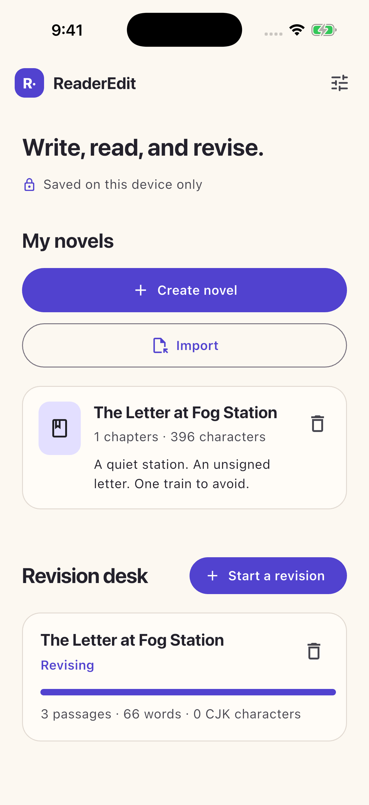
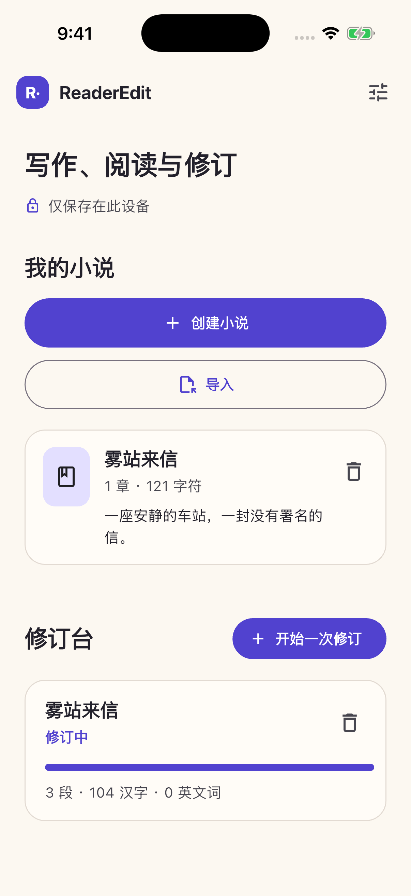
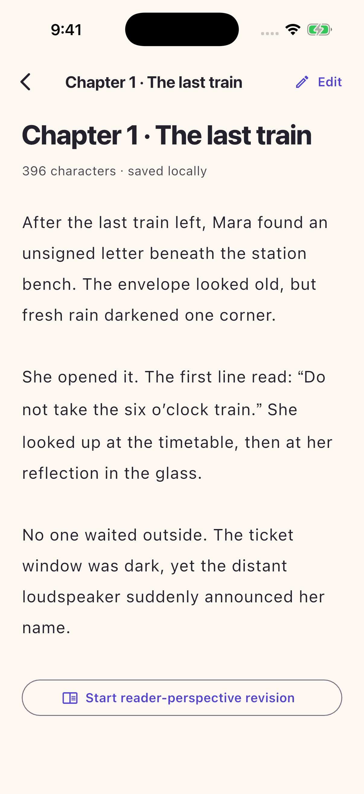
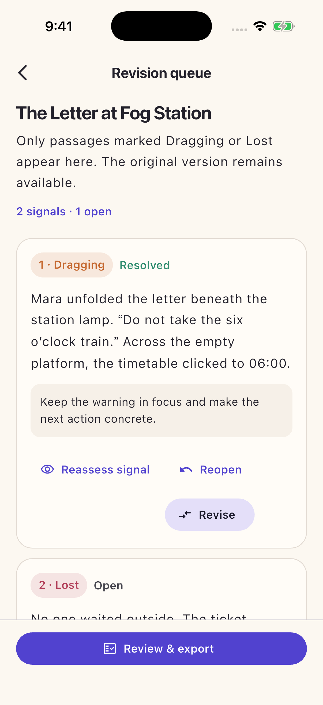
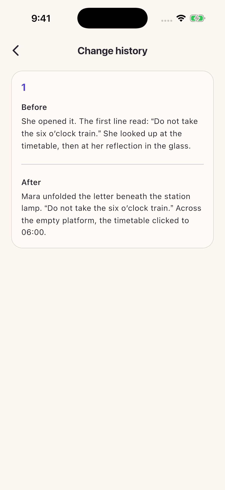
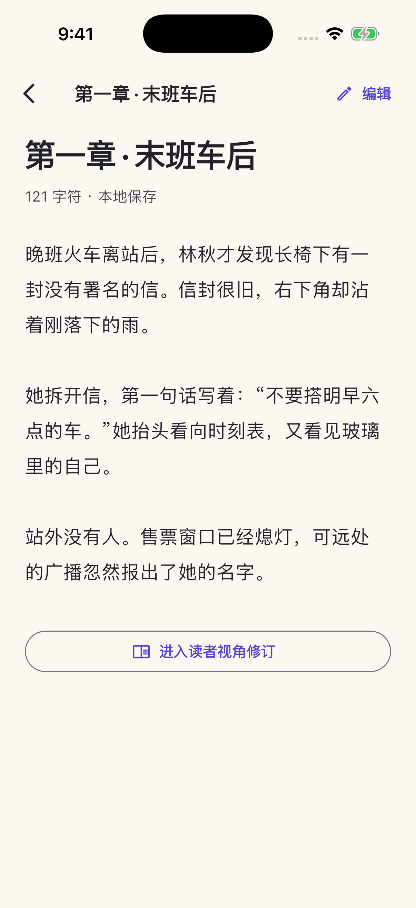
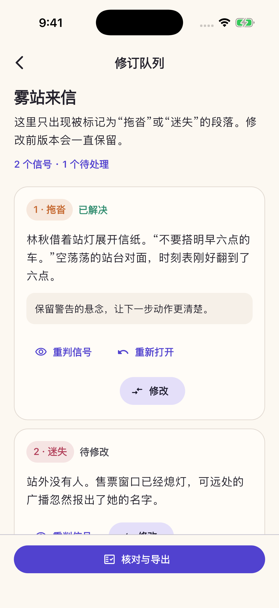
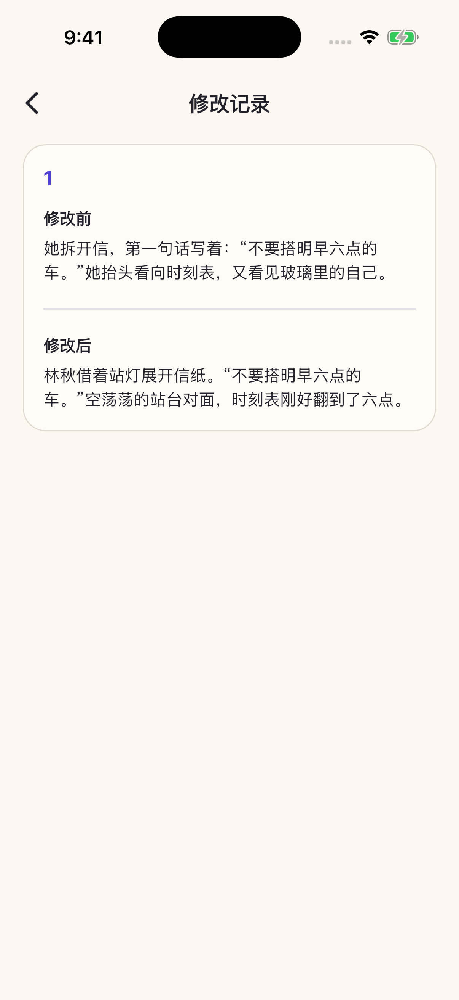

A local manuscript library
Create novels and chapters, or import TXT and Markdown through the system picker. UTF-8 and BOM-marked UTF-16 are supported. The original file stays unchanged.
NOVELS · CHAPTERS · REVISION
Keep your manuscript on your device. Read a chapter, edit in place, and turn your own reader signals into a focused revision queue.
Explore the workflow

Built for real work
Create novels and chapters, or import TXT and Markdown through the system picker. UTF-8 and BOM-marked UTF-16 are supported. The original file stays unchanged.
Move directly from chapter reading into editing. English and Simplified Chinese interfaces, light and dark appearance, and a replayable quick tour keep the workspace familiar.
Mark passages Clear, Dragging, or Lost. Revise flagged paragraphs, compare before and after, check your reader promises, and copy the revised draft or revision log.
为真实使用而设计
创建小说与章节，或通过系统选择器导入 TXT、Markdown。支持 UTF-8 和带字节顺序标记的 UTF-16，原始文件保持不变。
从章节阅读直接切换到编辑。支持简体中文和英文界面、浅色与深色外观，也可随时重看使用引导。
将段落标记为清楚、拖沓或迷失。修改被标记的段落、查看前后对照、核对读者承诺，并复制修订稿或修订记录。
A closer look
Original demo manuscript shown in real iPhone captures. No account is required for the core writing workflow.
看看实际界面
真实 iPhone 运行界面，使用原创示例稿件。核心写作流程无需账号。






Support & local data
This local draft has no published support channel or production domain. No support address has been invented. For local data controls, open Settings in ReaderEdit. Deleting a novel does not remove separately created revision sessions; delete those too or erase all manuscript data.
The core workflow works offline. A configured online privacy page, cloud file provider, clipboard, or operating-system backup may involve services outside ReaderEdit. Read the privacy draft.
支持与本地数据
本地草稿尚无已发布的支持渠道和正式域名，也未编造联系地址。数据管理可在 ReaderEdit 设置中操作。删除小说不会删除独立创建的修订会话；请单独删除这些会话，或清除全部稿件数据。
核心流程可离线使用。已配置的在线隐私页面、云端文件提供方、剪贴板或系统备份可能涉及 ReaderEdit 之外的服务。阅读隐私草稿。